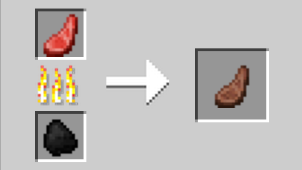

mutton
Description
Cooked Mutton is a food item made from cooking raw mutton in a furnace. Cooked mutton can be eaten, restoring 6 hunger and 9.6 saturation. Cooked mutton can also be fed to wolves. Sheep can be farmed for a steady supply of cooked mutton and wool. They can also be cooked automatically using dispensers and lava.
